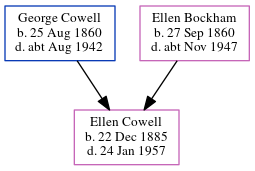

Elizabeth Mabel Medcalf (née Cowell) 1890 - 1973
[ Home ] | [ Calendar ] | [ Surnames Index ] | [ Errors ] | [ Family History ]A dressmaker and the youngest of 3 children of George Cowell (an army ordnance depot foreman) and Ellen Bockham, Elizabeth Cowell, the third cousin twice-removed on the mother's side of Nigel Horne, was born in Rochester, Kent, England on 13 Apr 18901,2,3,4,5, was baptised there at St Margaret's Church on 15 Jun 1890 and married Lewis Medcalf (a house decorator with whom she had 1 child, Mary Helen) in Medway, Kent, England around May 19206.
During her life, she was living at Maidstone Road in Rochester on 5 Apr 18911; at 1 Quarters, Fort Clarence in Rochester on 31 Mar 19012; at Fort Clarence in Rochester on 2 Apr 19117 - less than a mile from her sister Alice Sarah who was living at 112 Cecil Road in Rochester; at 94 Rochester Avenue in Rochester on 29 Sept 19393; and at 7 Lyndhurst Avenue, Rainham, Kent in 1973.
She died on 28 Feb 1973 in Chatham, Kent, England4.
Parents
- George Henry was born on 25 Aug 1860
- Ellen was born on 27 Sept 1860
Children
- Mary Helen was born on 16 Oct 1921
Citations
- 1891 England, Wales & Scotland Census - Findmypast (was age 1 and the daughter of the head of the household)
- 1901 England, Wales & Scotland Census - Findmypast (was age 10 and the daughter of the head of the household)
- 1939 Register - Findmypast (was the wife of the head of the household)
- England & Wales deaths 1837-2007 - Findmypast
- Kent Burials - Findmypast
- England & Wales marriages 1837-2008 - Findmypast
- 1911 Census for England & Wales - Findmypast (was age 21 and the daughter of the head of the household)
Media
Elizabeth Cowell - probate
1911 UK Census - page 1

1891 UK Census

1901 UK Census

1911 UK Census - page 1
1911 UK Census - page 2

1891 England, Wales & Scotland Census - GBC/1891/0005385106
England & Wales deaths 1837-2007 - BMD/D/1973/1/AZ/000926/113
England & Wales marriages 1837-2008 - BMD/M/1920/2/AZ/000320/004
England & Wales births 1837-2006 - BMD/B/1890/2/AZ/000126/193
1939 Register Transcription - TNA-R39-1772-1772G-016-18
1911 Census For England & Wales - GBC-1911-RG14-03888-0445-4
Kent Burials - KENT/FHS/BUR/CIVIL/179994
Kent Baptisms - PRS/MEDWAY/BAP/0400976
Family Tree
Map
Generated by ged2site. Last updated on Jul 3, 2024
Known Issues
Residence record for 1973 contains no citation